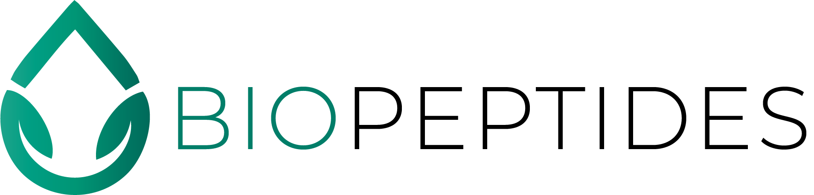

¿Soy candidato/a?El peso también tiene un componente biológico real que pocas veces se explica. Un equipo médico evalúa tu caso completo, y todo empieza con una simple conversación.
Descubre si eres candidato/aLos resultados varían por persona y requieren valoración y seguimiento médico continuo.
Hiciste lo que se supone que funciona, y el resultado no fue el esperado.
Aunque en el fondo sabes que lo has intentado en serio, más de una vez.
Imaginas citas largas y trámites, cuando el primer paso es mucho más simple.
Y quieres una respuesta con evidencia, no otra opinión más en redes.
Durante años se simplificó el manejo de peso a una ecuación de esfuerzo puro. Hoy se reconoce que el apetito y el metabolismo también están regulados por señales hormonales que no dependen únicamente de la voluntad.
Imagina que tu apetito y tu metabolismo están controlados por un panel de señales de tráfico dentro de tu cuerpo — una evaluación médica revisa cómo están funcionando esas señales en tu caso particular, en vez de asumir que la fórmula genérica de "come menos, muévete más" aplica igual para todos.
No es apto para todas las personas y requiere seguimiento profesional — más abajo te explicamos cómo funciona ese proceso.
Le dice a tu cerebro "ya hay suficiente" y regula qué tan rápido regresa el hambre después de comer.
Influye en cómo tu cuerpo usa la energía que consumes, más allá de cuánto comas o te muevas.
Pensar que el peso depende solo de la voluntad — y que si no ha funcionado antes, es porque "te falta disciplina".
La obesidad y el manejo de peso son reconocidos por organizaciones médicas internacionales como una condición con componentes biológicos reales, no solo un tema de fuerza de voluntad. Eso no invalida tus intentos anteriores — significa que puede faltar una pieza médica que una evaluación individual sí revisa. Los resultados varían por persona.
No es autorecetarte un medicamento — es un proceso con valoración médica real, pensado para que no estés solo/a en el camino.
Antes de iniciar, respondes un cuestionario de salud amplio que revisa un profesional — historial médico, medicamentos actuales y posibles contraindicaciones — para confirmar si eres candidato/a seguro/a.
Puedes compartir tus medidas semana con semana y recibir un plan nutricional de apoyo — todo a distancia, a tu ritmo.
Por ahora hacemos entregas directo a tu domicilio en Chihuahua capital. Iremos sumando más ciudades próximamente.
4 preguntas rápidas para entender tu situación. Menos de 1 minuto — un solo paso, sin compromiso.
Te confirmamos precio, envío a tu domicilio y resolvemos lo puntual — ya sin vueltas.
Si decides continuar, te compartimos el cuestionario de salud completo para tu valoración antes de iniciar.
Que no es solo falta de voluntadHay un componente biológico real, respaldado por evidencia clínica.
Que tus intentos anteriores contaronNo haber logrado el resultado con dieta sola no dice nada sobre tu disciplina.
Que el primer paso es manejableUna conversación, no un proceso largo desde el día uno.
Que hay acompañamiento médico realNo una fórmula genérica de redes sociales, sino un caso evaluado de forma individual.
Esto está respaldado por estudios clínicos revisados por profesionales de salud. Los resultados varían por persona y requieren valoración médica.
Los más comunes son náuseas, fatiga leve, diarrea o estreñimiento — generalmente en las primeras 2-4 semanas de cada nueva dosis. Comer porciones pequeñas, evitar comidas grasosas y mantenerte hidratado ayuda mucho. En los estudios clínicos, menos del 5% de los participantes suspendió el tratamiento por efectos secundarios.
Sí. Antes de iniciar respondes un cuestionario de salud amplio que revisa personal médico — no es un tratamiento que se autorice automáticamente. Está pensado para confirmar que es seguro para tu caso particular.
No de la misma forma para todos. En los estudios clínicos la gran mayoría de las personas respondió favorablemente, pero hay quienes no son candidatos por su historial médico. Por eso la valoración por cuestionario es un paso obligatorio antes de iniciar, no un trámite decorativo.
Sí, de forma opcional y a distancia: puedes compartir tus medidas semana con semana y recibir un plan nutricional de apoyo. Tú decides qué tanto acompañamiento quieres además de la valoración médica inicial.
Por ahora hacemos entregas a domicilio en Chihuahua capital. Coordinamos el envío directamente contigo por WhatsApp una vez confirmada tu valoración.
La advertencia en la caja viene de estudios en ratas, que tienen una densidad de receptores hormonales en la tiroides muy distinta a la de humanos. En estudios con más de 17,000 pacientes no se ha demostrado aumento del riesgo de cáncer de tiroides en humanos. Está contraindicada en personas con antecedente personal o familiar de carcinoma medular de tiroides o síndrome MEN 2 — por eso la valoración médica previa es indispensable.
4 preguntas rápidas — al final te decimos el siguiente paso.
Siguiente paso: valoración médica por WhatsApp, sin costo por la conversación inicial.
Continuar por WhatsApp